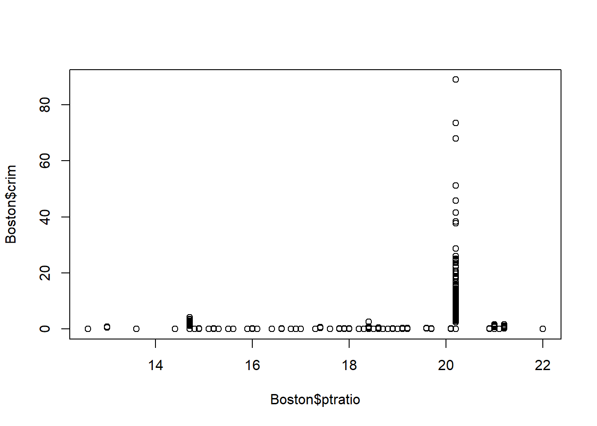

Practical 1
This practical consists of two parts, both of which will use datasets and exercises adapted from the core textbook for this course:
James, G., Witten, D., Hastie, T. and Tibshirani, R. (2021). An Introduction to Statistical Learning with Applications in R. 2nd ed. New York: Springer. https://www.statlearning.com/
PART I
For the tasks below, you will require the College dataset.
Click here to download the file: College.csv .
Remember to place your data file in a separate subfolder within your R project working directory.
This data file contains 18 variables for 777 different universities and colleges in the United States. The variables are:
- Private : Public/private indicator
- Apps : Number of applications received
- Accept : Number of applicants accepted
- Enroll : Number of new students enrolled
- Top10perc : New students from top 10% of high school class
- Top25perc : New students from top 25% of high school class
- F.Undergrad : Number of full-time undergraduates
- P.Undergrad : Number of part-time undergraduates
- Outstate : Out-of-state tuition
- Room.Board : Room and board costs
- Books : Estimated book costs
- Personal : Estimated personal spending
- PhD : Percent of faculty with Ph.D.’s
- Terminal : Percent of faculty with terminal degree
- S.F.Ratio: Student/faculty ratio
- perc.alumni : Percent of alumni who donate
- Expend : Instructional expenditure per student
- Grad.Rate : Graduation rate
Task 1
Import the dataset using a suitable tidyverse function and name this
object college.
If you have a look at the contents of the data object using View(),
you will notice that the first column contains the names of all of the
universities in the dataset. You will also notice that it has a strange
name.

Actually, these data should not be treated as a variable (column) since it is just a list of university names.
Task 2
Keeping the list of names in the data object, transform this column such
that the university names in the column become row names. Hint: use the
column_to_rownames() function from dplyr.
How would have your approach to this task differed if you would have imported the dataset using base R? Try it!
The data file could have instead been imported using read.csv():
college <- read.csv("data/College.csv")
Using the base R approach, the first column containing the university
names would have been named “X”, as shown below using View().

Now, how would be go about transforming the contents of the first column into row names?
This would require two steps.
First, we assign the column contents to rows names.
rownames(college) <- college[, 1]
If you have another look at the data object, you will see that the rows have now been renamed using the university names in the “X” column, but the column is still part of the dataset. We therefore need to tell R to delete the column.
college <- college[, -1]
Task 3
Produce summary statistics for all variables in the data object.
## Private Apps Accept Enroll
## Length:777 Min. : 81 Min. : 72 Min. : 35
## Class :character 1st Qu.: 776 1st Qu.: 604 1st Qu.: 242
## Mode :character Median : 1558 Median : 1110 Median : 434
## Mean : 3002 Mean : 2019 Mean : 780
## 3rd Qu.: 3624 3rd Qu.: 2424 3rd Qu.: 902
## Max. :48094 Max. :26330 Max. :6392
## Top10perc Top25perc F.Undergrad P.Undergrad
## Min. : 1.00 Min. : 9.0 Min. : 139 Min. : 1.0
## 1st Qu.:15.00 1st Qu.: 41.0 1st Qu.: 992 1st Qu.: 95.0
## Median :23.00 Median : 54.0 Median : 1707 Median : 353.0
## Mean :27.56 Mean : 55.8 Mean : 3700 Mean : 855.3
## 3rd Qu.:35.00 3rd Qu.: 69.0 3rd Qu.: 4005 3rd Qu.: 967.0
## Max. :96.00 Max. :100.0 Max. :31643 Max. :21836.0
## Outstate Room.Board Books Personal
## Min. : 2340 Min. :1780 Min. : 96.0 Min. : 250
## 1st Qu.: 7320 1st Qu.:3597 1st Qu.: 470.0 1st Qu.: 850
## Median : 9990 Median :4200 Median : 500.0 Median :1200
## Mean :10441 Mean :4358 Mean : 549.4 Mean :1341
## 3rd Qu.:12925 3rd Qu.:5050 3rd Qu.: 600.0 3rd Qu.:1700
## Max. :21700 Max. :8124 Max. :2340.0 Max. :6800
## PhD Terminal S.F.Ratio perc.alumni
## Min. : 8.00 Min. : 24.0 Min. : 2.50 Min. : 0.00
## 1st Qu.: 62.00 1st Qu.: 71.0 1st Qu.:11.50 1st Qu.:13.00
## Median : 75.00 Median : 82.0 Median :13.60 Median :21.00
## Mean : 72.66 Mean : 79.7 Mean :14.09 Mean :22.74
## 3rd Qu.: 85.00 3rd Qu.: 92.0 3rd Qu.:16.50 3rd Qu.:31.00
## Max. :103.00 Max. :100.0 Max. :39.80 Max. :64.00
## Expend Grad.Rate
## Min. : 3186 Min. : 10.00
## 1st Qu.: 6751 1st Qu.: 53.00
## Median : 8377 Median : 65.00
## Mean : 9660 Mean : 65.46
## 3rd Qu.:10830 3rd Qu.: 78.00
## Max. :56233 Max. :118.00
Task 5
Produce side by side box plots of Outstate versus Private using base
R.
Did this work? Why?
Using the plot() base R function to produce a box plot would produce
an error since the Private variable is of class character. Most
statistical functions will not work with character vectors.
Error in plot.window(...) : need finite 'xlim' values
In addition: Warning messages:
1: In xy.coords(x, y, xlabel, ylabel, log) : NAs introduced by coercion
2: In min(x) : no non-missing arguments to min; returning Inf
3: In max(x) : no non-missing arguments to max; returning -Inf
Creating a box plot with tidyverse would work.
college %>% ggplot(aes(x = Private, y = Outstate)) + geom_boxplot()

However, it is important to note that if a variable is not of the right
class, then this might have unintended consequences for example, when
building models. In this case, the Private variable must be
transformed into a factor.
Task 6
Using the Top10perc variable, create a new categorical variable called
Elite such that universities are divided into two groups based on
whether or not the proportion of students coming from the top 10% of
their high school classes exceeds 50%. Hint: use a combination of
mutate() and if_else().
Task 7
Produce side by side box plots of the new Elite variable and
Outstate.

How would you produce a similar plot using base R?
plot(college$Elite, college$Outstate, xlab = "Elite", ylab = "Outstate")
Task 8
Use base R to produce a multipanel plot that displays histograms of the
following variables: Apps, perc.alumni, S.F.Ratio, Expend. Hint:
use par(mfrow=c(2,2)) to set up a 2x2 panel. Try to adjust the
specifications (e.g. breaks).
Code
# An example is shown below. Note that the purpose of the mfrow parameter is to change the default way in which R displays plots which is in a single panel display. Once applied, all plots you create later will also be displayed in a 2x2 grid. To revert back, you need to enter par(mfrow=c(1,1)) into the console.
par(mfrow=c(2,2))
hist(college$Apps)
hist(college$perc.alumni, col=2)
hist(college$S.F.Ratio, col=3, breaks=10)
hist(college$Expend, breaks=100)
Task 9
Using Accept and Apps, create a new variable that describes
acceptance rate. Name this variable acceptance_rate. Hint: use
mutate().
Task 10
Using the acceptance_rate variable, find out which university has the
lowest acceptance rate. Hint: for a tidyverse approach, you can use
slice_min().
## Private Apps Accept Enroll Top10perc Top25perc
## Princeton University Yes 13218 2042 1153 90 98
## F.Undergrad P.Undergrad Outstate Room.Board Books Personal
## Princeton University 4540 146 19900 5910 675 1575
## PhD Terminal S.F.Ratio perc.alumni Expend Grad.Rate Elite
## Princeton University 91 96 8.4 54 28320 99 Yes
## acceptance_rate
## Princeton University 0.1544863Task 11
Using the acceptance_rate variable, find out which university has the
highest acceptance rate.
## Private Apps Accept Enroll Top10perc Top25perc
## Emporia State University No 1256 1256 853 43 79
## Mayville State University No 233 233 153 5 12
## MidAmerica Nazarene College Yes 331 331 225 15 36
## Southwest Baptist University Yes 1093 1093 642 12 32
## University of Wisconsin-Superior No 910 910 342 14 53
## Wayne State College No 1373 1373 724 6 21
## F.Undergrad P.Undergrad Outstate Room.Board
## Emporia State University 3957 588 5401 3144
## Mayville State University 658 58 4486 2516
## MidAmerica Nazarene College 1100 166 6840 3720
## Southwest Baptist University 1770 967 7070 2500
## University of Wisconsin-Superior 1434 417 7032 2780
## Wayne State College 2754 474 2700 2660
## Books Personal PhD Terminal S.F.Ratio
## Emporia State University 450 1888 72 75 19.3
## Mayville State University 600 1900 68 68 15.7
## MidAmerica Nazarene College 1100 4913 33 33 15.4
## Southwest Baptist University 400 1000 52 54 15.9
## University of Wisconsin-Superior 550 1960 75 81 15.2
## Wayne State College 540 1660 60 68 20.3
## perc.alumni Expend Grad.Rate Elite
## Emporia State University 4 5527 50 No
## Mayville State University 11 6971 51 No
## MidAmerica Nazarene College 20 5524 49 No
## Southwest Baptist University 13 4718 71 No
## University of Wisconsin-Superior 15 6490 36 No
## Wayne State College 29 4550 52 No
## acceptance_rate
## Emporia State University 1
## Mayville State University 1
## MidAmerica Nazarene College 1
## Southwest Baptist University 1
## University of Wisconsin-Superior 1
## Wayne State College 1PART II
For the tasks below, you will require the Boston dataset.
Click here to download the file: Boston.csv .
Remember to place your data file in a separate subfolder within your R project working directory.
## New names:
## Rows: 506 Columns: 14
## ── Column specification
## ──────────────────────────────────────────────────────── Delimiter: "," dbl
## (14): ...1, crim, zn, indus, chas, nox, rm, age, dis, rad, tax, ptratio,...
## ℹ Use `spec()` to retrieve the full column specification for this data. ℹ
## Specify the column types or set `show_col_types = FALSE` to quiet this message.
## • `` -> `...1`



Code
#d
par(mfrow=c(1,3))
hist(Boston$crim[Boston$crim>1], breaks=25)
# most cities have low crime rates, but there is a long tail: 18 suburbs appear
# to have a crime rate > 20, reaching to above 80
hist(Boston$tax, breaks=25)
# there is a large divide between suburbs with low tax rates and a peak at 660-680
hist(Boston$ptratio, breaks=25)
## [1] 35 14## [1] 19.05## [,1] [,2]
## ...1 399.0000 406.0000
## crim 38.3518 67.9208
## zn 0.0000 0.0000
## indus 18.1000 18.1000
## chas 0.0000 0.0000
## nox 0.6930 0.6930
## rm 5.4530 5.6830
## age 100.0000 100.0000
## dis 1.4896 1.4254
## rad 24.0000 24.0000
## tax 666.0000 666.0000
## ptratio 20.2000 20.2000
## lstat 30.5900 22.9800
## medv 5.0000 5.0000## ...1 crim zn indus
## Min. : 1.0 Min. : 0.00632 Min. : 0.00 Min. : 0.46
## 1st Qu.:127.2 1st Qu.: 0.08205 1st Qu.: 0.00 1st Qu.: 5.19
## Median :253.5 Median : 0.25651 Median : 0.00 Median : 9.69
## Mean :253.5 Mean : 3.61352 Mean : 11.36 Mean :11.14
## 3rd Qu.:379.8 3rd Qu.: 3.67708 3rd Qu.: 12.50 3rd Qu.:18.10
## Max. :506.0 Max. :88.97620 Max. :100.00 Max. :27.74
## chas nox rm age
## Min. :0.00000 Min. :0.3850 Min. :3.561 Min. : 2.90
## 1st Qu.:0.00000 1st Qu.:0.4490 1st Qu.:5.886 1st Qu.: 45.02
## Median :0.00000 Median :0.5380 Median :6.208 Median : 77.50
## Mean :0.06917 Mean :0.5547 Mean :6.285 Mean : 68.57
## 3rd Qu.:0.00000 3rd Qu.:0.6240 3rd Qu.:6.623 3rd Qu.: 94.08
## Max. :1.00000 Max. :0.8710 Max. :8.780 Max. :100.00
## dis rad tax ptratio
## Min. : 1.130 Min. : 1.000 Min. :187.0 Min. :12.60
## 1st Qu.: 2.100 1st Qu.: 4.000 1st Qu.:279.0 1st Qu.:17.40
## Median : 3.207 Median : 5.000 Median :330.0 Median :19.05
## Mean : 3.795 Mean : 9.549 Mean :408.2 Mean :18.46
## 3rd Qu.: 5.188 3rd Qu.:24.000 3rd Qu.:666.0 3rd Qu.:20.20
## Max. :12.127 Max. :24.000 Max. :711.0 Max. :22.00
## lstat medv
## Min. : 1.73 Min. : 5.00
## 1st Qu.: 6.95 1st Qu.:17.02
## Median :11.36 Median :21.20
## Mean :12.65 Mean :22.53
## 3rd Qu.:16.95 3rd Qu.:25.00
## Max. :37.97 Max. :50.00## [1] 64 14## [1] 13 14## ...1 crim zn indus
## Min. : 98.0 Min. :0.02009 Min. : 0.00 Min. : 2.680
## 1st Qu.:225.0 1st Qu.:0.33147 1st Qu.: 0.00 1st Qu.: 3.970
## Median :233.0 Median :0.52014 Median : 0.00 Median : 6.200
## Mean :232.3 Mean :0.71879 Mean :13.62 Mean : 7.078
## 3rd Qu.:258.0 3rd Qu.:0.57834 3rd Qu.:20.00 3rd Qu.: 6.200
## Max. :365.0 Max. :3.47428 Max. :95.00 Max. :19.580
## chas nox rm age
## Min. :0.0000 Min. :0.4161 Min. :8.034 Min. : 8.40
## 1st Qu.:0.0000 1st Qu.:0.5040 1st Qu.:8.247 1st Qu.:70.40
## Median :0.0000 Median :0.5070 Median :8.297 Median :78.30
## Mean :0.1538 Mean :0.5392 Mean :8.349 Mean :71.54
## 3rd Qu.:0.0000 3rd Qu.:0.6050 3rd Qu.:8.398 3rd Qu.:86.50
## Max. :1.0000 Max. :0.7180 Max. :8.780 Max. :93.90
## dis rad tax ptratio
## Min. :1.801 Min. : 2.000 Min. :224.0 Min. :13.00
## 1st Qu.:2.288 1st Qu.: 5.000 1st Qu.:264.0 1st Qu.:14.70
## Median :2.894 Median : 7.000 Median :307.0 Median :17.40
## Mean :3.430 Mean : 7.462 Mean :325.1 Mean :16.36
## 3rd Qu.:3.652 3rd Qu.: 8.000 3rd Qu.:307.0 3rd Qu.:17.40
## Max. :8.907 Max. :24.000 Max. :666.0 Max. :20.20
## lstat medv
## Min. :2.47 Min. :21.9
## 1st Qu.:3.32 1st Qu.:41.7
## Median :4.14 Median :48.3
## Mean :4.31 Mean :44.2
## 3rd Qu.:5.12 3rd Qu.:50.0
## Max. :7.44 Max. :50.0## ...1 crim zn indus
## Min. : 1.0 Min. : 0.00632 Min. : 0.00 Min. : 0.46
## 1st Qu.:127.2 1st Qu.: 0.08205 1st Qu.: 0.00 1st Qu.: 5.19
## Median :253.5 Median : 0.25651 Median : 0.00 Median : 9.69
## Mean :253.5 Mean : 3.61352 Mean : 11.36 Mean :11.14
## 3rd Qu.:379.8 3rd Qu.: 3.67708 3rd Qu.: 12.50 3rd Qu.:18.10
## Max. :506.0 Max. :88.97620 Max. :100.00 Max. :27.74
## chas nox rm age
## Min. :0.00000 Min. :0.3850 Min. :3.561 Min. : 2.90
## 1st Qu.:0.00000 1st Qu.:0.4490 1st Qu.:5.886 1st Qu.: 45.02
## Median :0.00000 Median :0.5380 Median :6.208 Median : 77.50
## Mean :0.06917 Mean :0.5547 Mean :6.285 Mean : 68.57
## 3rd Qu.:0.00000 3rd Qu.:0.6240 3rd Qu.:6.623 3rd Qu.: 94.08
## Max. :1.00000 Max. :0.8710 Max. :8.780 Max. :100.00
## dis rad tax ptratio
## Min. : 1.130 Min. : 1.000 Min. :187.0 Min. :12.60
## 1st Qu.: 2.100 1st Qu.: 4.000 1st Qu.:279.0 1st Qu.:17.40
## Median : 3.207 Median : 5.000 Median :330.0 Median :19.05
## Mean : 3.795 Mean : 9.549 Mean :408.2 Mean :18.46
## 3rd Qu.: 5.188 3rd Qu.:24.000 3rd Qu.:666.0 3rd Qu.:20.20
## Max. :12.127 Max. :24.000 Max. :711.0 Max. :22.00
## lstat medv
## Min. : 1.73 Min. : 5.00
## 1st Qu.: 6.95 1st Qu.:17.02
## Median :11.36 Median :21.20
## Mean :12.65 Mean :22.53
## 3rd Qu.:16.95 3rd Qu.:25.00
## Max. :37.97 Max. :50.00